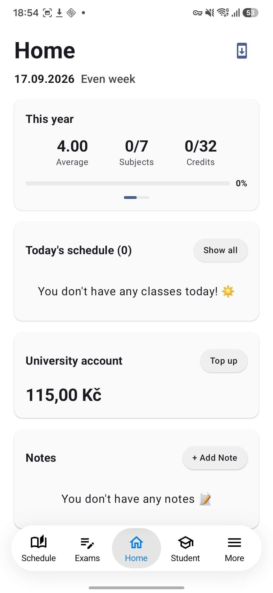
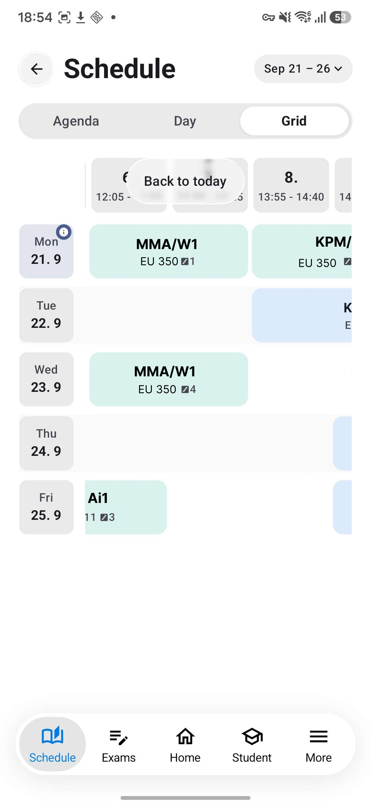
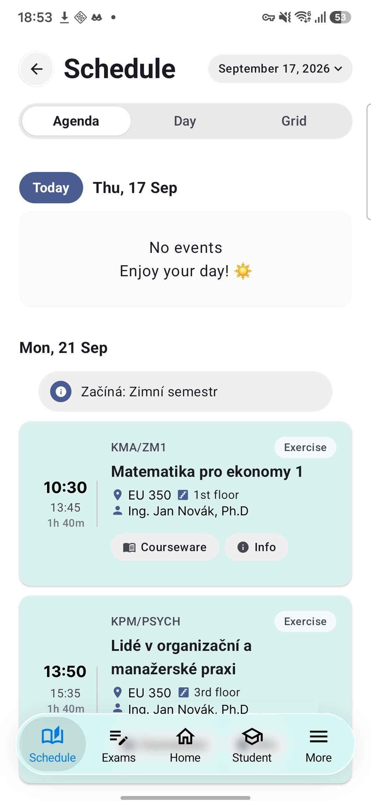
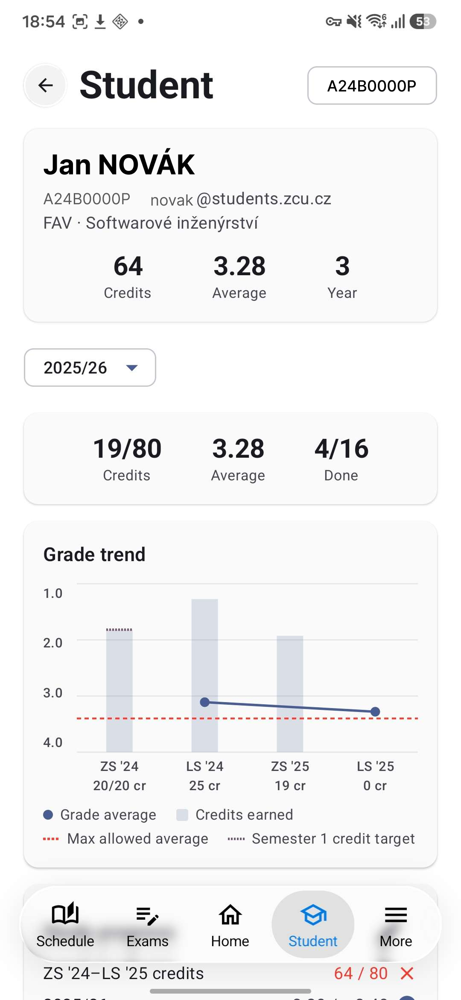
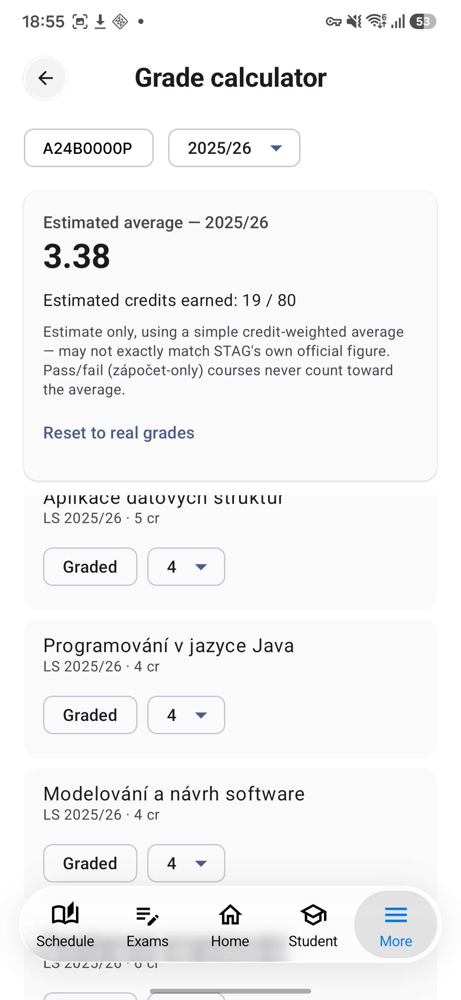
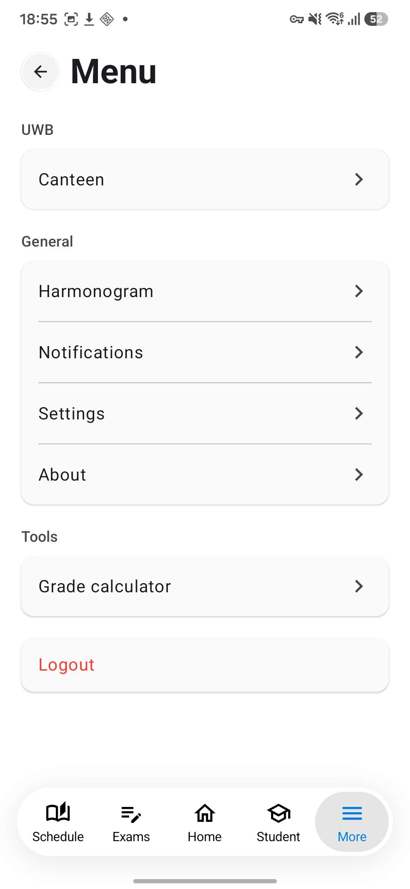
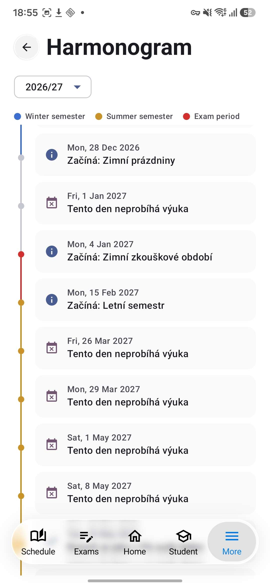

Unofficial · ZČU STAG
StagClient
A fast, native Android app for ZČU's STAG system — schedule, exams, grades,
canteen menu and your university account balance, talking directly to
STAG's own API instead of going through the official ISSTAG app.
Checking latest version…
Installing ▾
1 Tap "Install latest version" above — this downloads the APK file straight to your phone. 2 Open the downloaded file. Android will warn about installing from an unknown source the first time — allow it for your browser/files app. 3 Install, open, log in with your ZČU credentials. That's it. 4 The app checks for new versions itself from then on and offers to update in place.
Screenshots

Home 
Schedule · Grid Schedule · Day 
Schedule · Agenda 
Student 
Grade calculator 
Menu 
Harmonogram
Unofficial, community-made. Not affiliated with ZČU or IS/STAG.
Source and release notes: releases page .